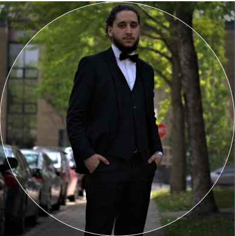

<div class="container">
    <div class="row">   
    
    <!----About me-->
    <div class="col-lg shadow border m-1">   
    <div class="text-center">
       <h2>Profil</h2>
       
       <p>Élève dynamique et passionné de quatrième année en Génie Logiciel à l'ÉTS, je recherche un stage en été 
           2025 pour mettre en pratique mes compétences acquises en génie logiciel et infrastructures et sécurité , ainsi qu'acquérir de l'expérience 
           dans l'industrie. Expérimenté en création, optimisation et maintien de code, ainsi qu'en administration de systèmes Linux, je suis aussi familier avec les 
           méthodologies Scrum et Agile. J'ai un intérêt marqué pour le développement Fullstack, le développement mobile ainsi que la CyberSécurité' </p>
    </div>
    </div>
    
    <!----project-->
    <div class="col-lg shadow border m-1">   
    <div class="text-center">
    <h2>Projet en vedette</h2>
    <h4>{{featuredProjects.name}}</h4>
    </div>
    
    <carousel>
       <div *ngFor="let picture of featuredProjects.pictures">
           <slide></slide>
       </div>
    </carousel>
    
    <p class="mt-2">{{featuredProjects.summary}}</p>
    <p>Visit the featured section to view more</p>
    </div>
    </div>
    </div>